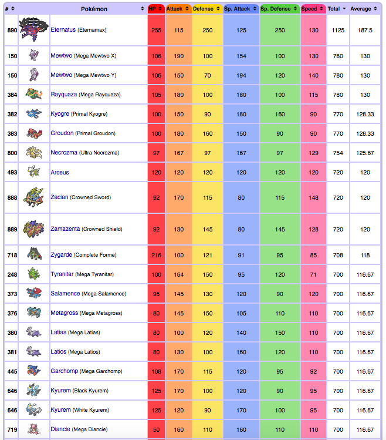

These are the stats for the pokemon (700 BST and above). If you want to see the full list, you should go to this website:
https://bulbapedia.bulbagarden.net/wiki/List_of_Pok%C3%A9mon_by_base_stats_(Generation_VIII-present)
